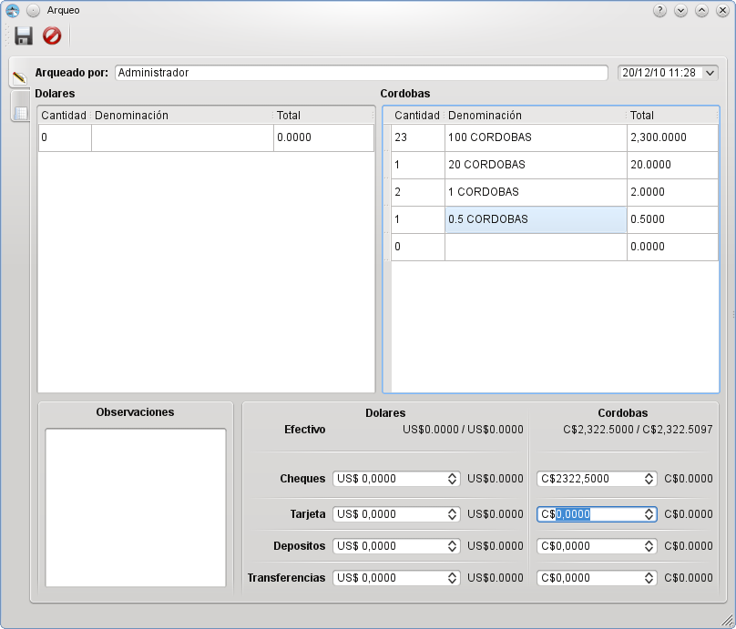

MIS Esquipulas Caja: Arqueo
El Arqueo de Caja consiste en el análisis de las transacciones del efectivo, durante un lapso determinado, con el objeto de comprobar si
si se ha contabilizado todo el efectivo recibido y por tanto el Saldo que arroja el análisis corresponde con el dinero que se encuentra
físicamente en caja.
En la siguiente imagen puede observar el Arqueo, donde puede observar en la columnas Dolares y Cordobas el detalle del dinero
que se encuentra fisicamente en la caja. En la parte inferior puede observar el total de las cantidades detalladas y el total de las
transacciones de caja.
Al momento de guardar el arqueo si existe un diferencia entre lo detallado y lo existente, se debe especificar en las observaciones el porque
de este incidente, sino el proceso no se podra llevar a cabo.
 Arqueo